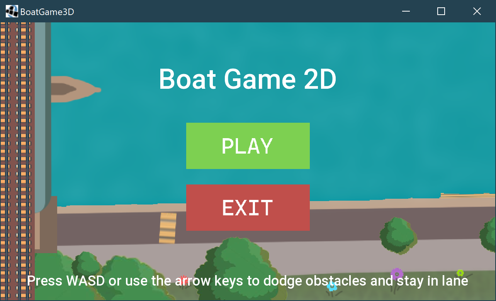

Features Not Fully Implemented
- UR_1 CUSTOMISATION: AI boats have randomised stats across races, which become better as
the player completes the legs of the race, but the player themself is stuck at the base level
- UR_2 STAMINA: Whilst this does decrease over each race, it is reset at the start of each level
- UR_3 STAY IN LANE: This has not been fully implemented. While the lanes are fully visible the
boat can simply go through them with no penalties to any stats of the boats
- FR_3.1 COLLISION LANE: See above
- FR_10.1 TUTORIAL LEVEL: While there is a brief description of the controls and the general task
there isn’t an explicit level for a tutorial
- UR_11 UPGRADES: Through each level it is not possible to change any specifications of the boat
and thus fails two functional requirements
- FR_11.1 UPGRADE SYSTEM: The upgrade screen presents no options to actually upgrade the
player boat, and only serves as a break between legs of the race
- FR_11.2 CURRENCY: No item entity is implemented that would give the player currency so it is
impossible for them to earn any
- FR_5.1 COLLISION OBSTACLES: This reduces both the speed, stats, and durability of the boat,
but the damage is insignificant
- FR_5.2 DAMAGE GAME OVER: If the player collides with over 100 obstacles, their boat entity
will be destroyed but the game will not end

View as a pdf file >>